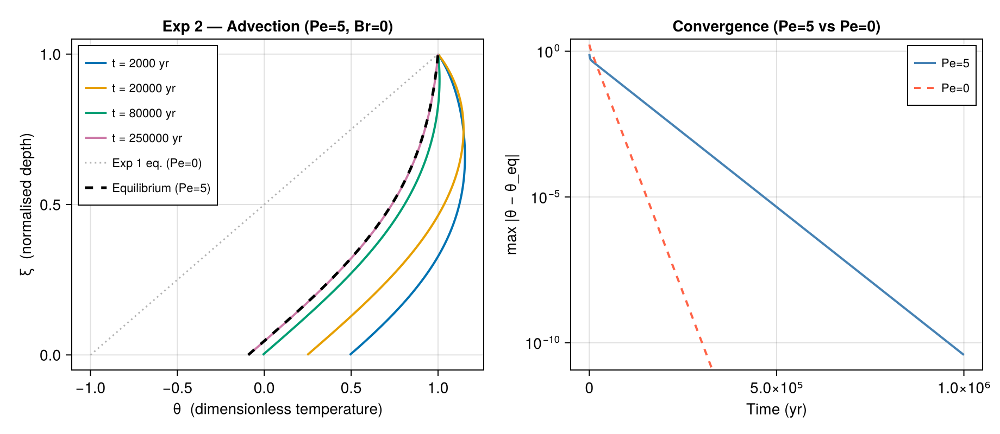

Exp 2 — Advection
Parameters: Pe = 5, Br = 0, γ = 2, β′ = 0, Λ = 0
Physical interpretation
A positive Péclet number (Pe = 5) represents upward vertical ice flow (ablation zone), where basal ice rises toward the surface. The advection term $-\mathrm{Pe}\,\xi\,\partial_\xi\theta$ competes with diffusion: warm deep ice is swept upward, compressing isotherms toward the surface and producing a distinctly nonlinear equilibrium profile compared to Exp 1.
The slowest-decaying eigenvalue for Pe = 5, β′ = 0 is $|\lambda_1| \approx 0.73$, giving a decay timescale of $1/0.73 \approx 1.37$ dimensionless units $\approx$ 43 000 yr — nearly three times slower than the pure-diffusion case. Upward advection inhibits vertical mixing.
For Pe > 0 the eigenvalue parameters $\alpha_n$ are negative ($\lambda_n = 2\,\mathrm{Pe}\,\alpha_n < 0$). The package searches the negative $\alpha$ range automatically.
Example
using IceColumnSolutions, CairoMakie
par = benchmark(:exp2)
sol_eq = solve_stationary(par; nz=100)
T0 = 230.0
ts = [2_000.0, 20_000.0, 80_000.0, 250_000.0]
sol = solve(par, ts; init=uniform(T0), n_modes=5, nz=100)
fig = Figure(size=(920, 400))
ax1 = Axis(fig[1,1],
xlabel = "θ (dimensionless temperature)",
ylabel = "ξ (normalised depth)",
title = "Exp 2 — Advection (Pe=5, Br=0)")
colors = Makie.wong_colors()
for (j, t) in enumerate(ts)
lines!(ax1, sol.theta[:, j], sol.zeta;
color=colors[j], linewidth=2, label="t = $(Int(t)) yr")
end
# also show Exp 1 equilibrium for comparison
par1 = benchmark(:exp1)
sol1eq = solve_stationary(par1; nz=100)
lines!(ax1, sol1eq.theta_eq, sol1eq.zeta;
color=:gray70, linestyle=:dot, linewidth=1.5, label="Exp 1 eq. (Pe=0)")
lines!(ax1, sol_eq.theta_eq, sol_eq.zeta;
color=:black, linestyle=:dash, linewidth=2.5, label="Equilibrium (Pe=5)")
axislegend(ax1; position=:lt, labelsize=11)
ax2 = Axis(fig[1,2],
xlabel = "Time (yr)",
ylabel = "max |θ − θ_eq|",
title = "Convergence (Pe=5 vs Pe=0)",
yscale = log10)
ts_dense = exp10.(range(2.5, 6.0, length=60))
kappa_yr = par.kappa * 365.25 * 24 * 3600
tau_dense = kappa_yr .* ts_dense ./ par.L^2
sol_d = solve(par, ts_dense; init=uniform(T0), n_modes=5, nz=100)
sol_d1 = solve(par1, ts_dense; init=uniform(T0), n_modes=12, nz=100)
dev = [maximum(abs.(sol_d.theta[:,j] .- sol_d.theta_eq)) for j in eachindex(ts_dense)]
dev1 = [maximum(abs.(sol_d1.theta[:,j] .- sol_d1.theta_eq)) for j in eachindex(ts_dense)]
lines!(ax2, ts_dense, dev; color=:steelblue, linewidth=2, label="Pe=5")
lines!(ax2, ts_dense, dev1; color=:tomato, linewidth=2, label="Pe=0", linestyle=:dash)
axislegend(ax2; position=:rt, labelsize=11)
fig
Notes
- Upward advection shifts the equilibrium profile toward the surface (shallower gradient in the lower half compared to Pe = 0).
- The right panel shows that Pe = 5 converges roughly 3× more slowly than pure diffusion — advection suppresses vertical heat mixing.
- Only
n_modes = 5is used here; for early times ($t \lesssim 1000$ yr) more modes improve accuracy but quadrature cost increases rapidly.